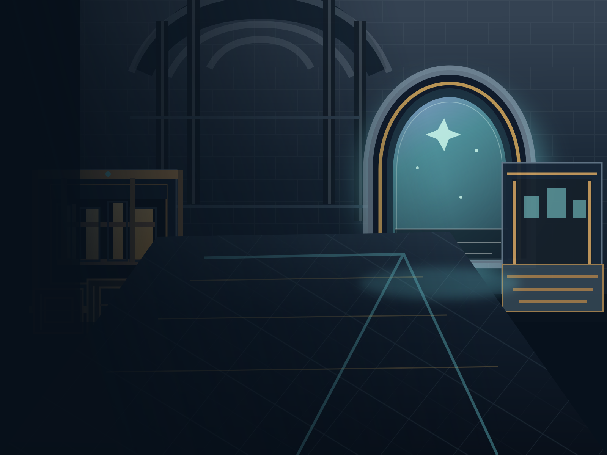

DIMENSIONAL TRADING POST
每一位来客，都带着另一个世界。
在界门之间开一间小店。收好货，读懂行情，再和远道而来的商旅谈成一笔生意。
随时回到主菜单保存进度。
点击查看货物；接待商旅后，点击或拖动货物上柜台。
维度锚点 · 停业通知
下一次记得先看今日货源：买商旅想收的类目，差价就是租金。
安装并维持设施，然后从这里派人外出搜刮。电力是其余设施与派遣名额的前提。
关店后待在空间夹层。每天开门前选一个世界，界门会开在那个世界的随机地点；今天来的客商都出自这一界。
机器放在机器区（和堆货的仓库是两块地方）。成品售价约是原料的两到三倍，但配方有失败率——炼废了只剩副产物。
打通人脉后可以按批发价订购指定物资，先付款、数天后到货。